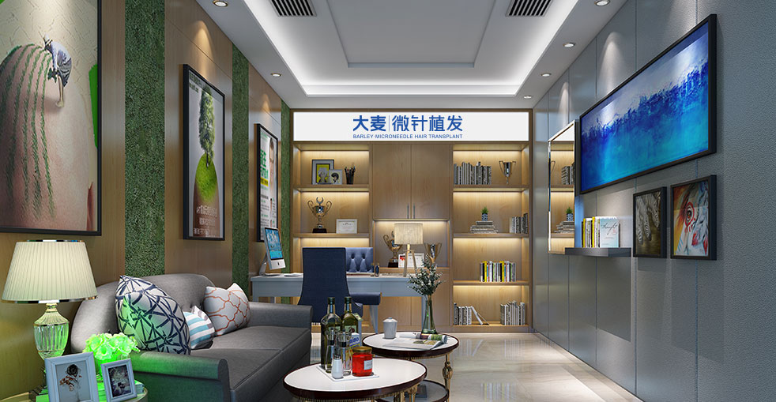

先進的微針技術，提高20-30%的濃度，呈現自然的效果

我們的頭髮加密手術專注於在不損害現有頭髮的情況下為稀疏區域增加濃度。使用我們的專利微針技術，我們可以比傳統方法提高20-30%的濃度，同時保持完全自然的頭髮生長紋理。非常適合處於掉髮初期、希望保持年輕外觀的人。
精準種植，保護現有頭髮毛囊
精準加密，實現自然、持久的髮量
3D頭皮繪圖，識別稀疏模式並規劃最佳濃度分佈
為您的自然頭髮方向和濃度設計客製化的加密模式
從安全供體區域選擇性採集高品質毛囊單位
在現有頭髮之間仔細放置微型切口以最大化濃度
使用專利植髮筆精準放置，實現最佳存活率和生長
增強的術後護理方案，包括可選的PRP加速癒合
業界領導者，成效卓越
自2006年以來微針植髮技術的先驅與領導者
遍佈中國主要城市，均秉持相同的高標準
創新的微針和植髮筆技術，實現卓越成效
受到全球患者信賴，帶來改變人生的成效
為國際患者在整個治療過程中提供全面英文支援
最先進的設施和嚴格的安全協議，讓您安心
看看我們的患者實現的驚人轉變


與我們滿意患者的珍貴時刻
成功手術後與我們的醫療團隊合影

與我們的醫生一起慶祝出色的成效

另一位滿意的患者分享他們的喜悅

出院前與我們的專家合影

開心的患者與陳醫生治療後合影

興奮的患者展示他們的新外觀
聽聽我們全球滿意患者的心得
"我的頭頂變得稀疏，我非常自我意識很強！大麥的頭髮加密治療讓我恢復了多年前的濃度！我在Google上看到的推薦真的很對！"
"我獲得的20-30%更高濃度真是不可思議！我的頭髮現在看起來如此濃密豐盈！從香港過來做的，朋友們都看不出來！"
"我在Bing上研究頭髮加密研究了幾個月才選擇大麥！成效超出了所有期望！從澳門過來很方便！"
"我的稀疏頭髮讓我看起來老了很多！加密治療後，我又有了豐盈、自然的頭髮了！台灣的朋友可以放心來！"
"頭髮加密讓我恢復了自信！我現在可以留短髮，不用擔心看到頭皮！從香港過來真的很值得！"
"我嘗試了很多產品都沒有效果！大麥的頭髮加密治療終於給了我想要的成效！從澳門過來做的，太滿意了！"
體驗我們現代舒適的設施

我們最先進的設施

在我們的高級休息室放鬆

無菌且先進

私密且專業

舒適的術後空間

歡迎的入口
找到關於植髮的常見問題解答
聯絡我們進行免費諮詢
15810155700
+86 13730143529
hairtransplant@qq.com